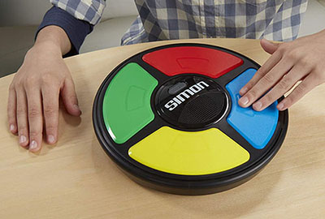

Help!

Object of the Game:
Correctly repeat a longer and longer sequence of signals.
Instructions:
- Tap the switch to ON, the Game level 1 will apear and the Skill Level switch to 1,2, 3 or 4.
- Game will give the first signal. Repeat the signal by pressing the same color lens.
- Game will add one. Repeat these two signals by pressing the same color lenses, in order.
- Game will add another one.
- Continue playing as long as you can repeat each sequence of signals correctly.
- If you fail to repeat a sequence exactly Game responds with a "RAZZ" sound. This means you've lost, and the sequence of signals ends.